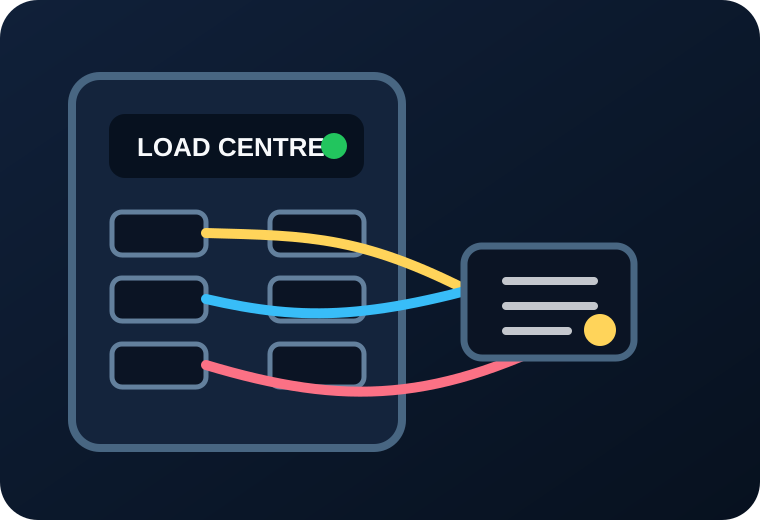

Residential & Commercial
Electrical Services
Panel work, troubleshooting, repairs, upgrades, lighting, installs, and emergency calls for homeowners, commercial spaces, and strata properties.
- Electrical diagnostics and repairs
- Panel and circuit upgrades
- Emergency service calls